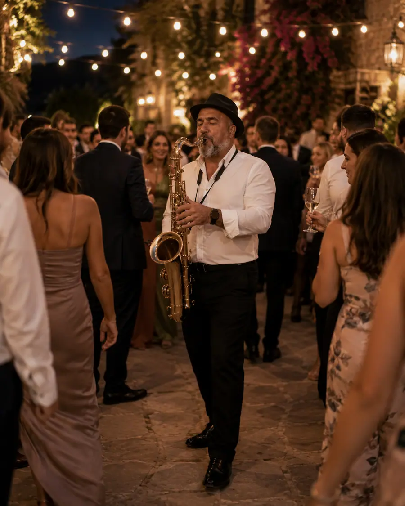

Live music for a wedding with presence
Saxophone works beautifully at weddings because it can feel intimate, recognizable and festive while staying refined.
The proposal adapts to venues across Mallorca, including Palma, Alcúdia, Pollença and Port d’Alcúdia.
Where sax fits
- Civil ceremony, entrance, exit or symbolic moments.
- Welcome cocktail and guest reception.
- Dinner, after-dinner atmosphere or transition into the party.
- First dance or danceable set with a polished feel.
Photos
Wedding atmospheres with live saxophone.


Also